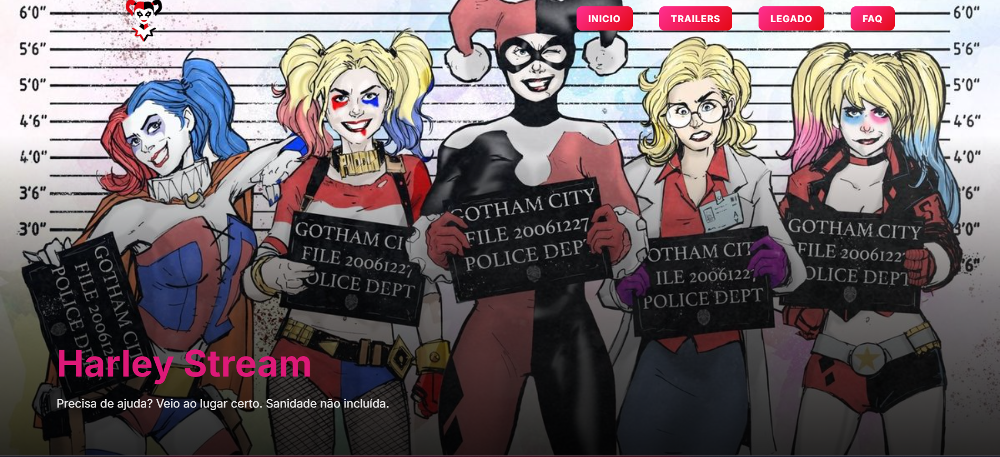
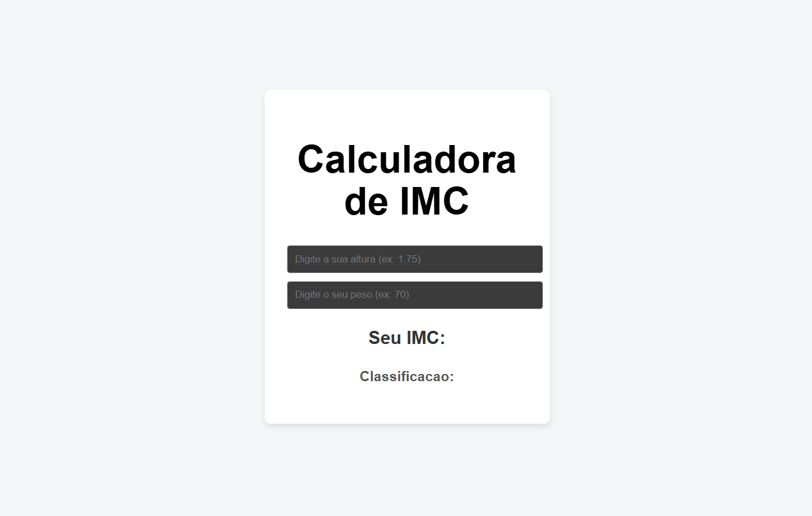
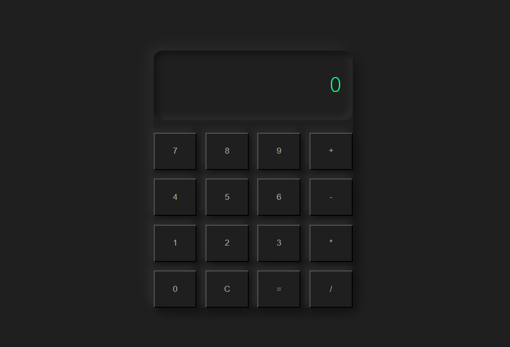

Desenvolvedor Full Stack Java
Criando interfaces modernas e funcionais com HTML, CSS e JavaScript.
Ver Projetos>whoami
>role
>stack --frontend
>stack --backend
>stack --tools

Harley Stream ⭐ Destaque
Landing page temática inspirada na estética caótica da personagem Harley Quinn.
O projeto explora organização de estilos com SCSS, interações em JavaScript e construção de layout responsivo com Flexbox e Grid.
A interface inclui navegação por abas, cards interativos com trailers em modal, seção FAQ com acordeão e adaptação completa para mobile, tablet e desktop.

Calculadora IMC
Aplicação desenvolvida em React com Vite para cálculo de IMC. O projeto explora criação de componentes, gerenciamento de estado e atualização dinâmica da interface com JavaScript.

Landing Page Evento
Landing page desenvolvida com HTML, SCSS e JavaScript utilizando Parcel como bundler. Inclui contagem regressiva dinâmica, animações com AOS.js e layout responsivo construído com Flexbox e arquitetura modular de estilos.

Calculadora Vue
Calculadora desenvolvida com Vue 3 utilizando Composition API. O projeto explora reatividade, componentização e comunicação entre componentes para construção de uma interface interativa de cálculo.
|
contato